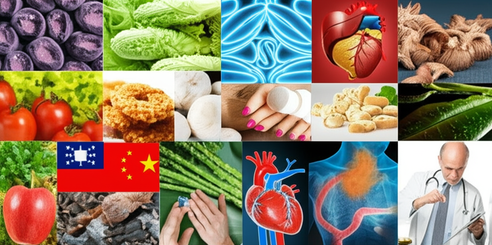

本文整理了近期與健康相關的新聞資訊，涵蓋心血管疾病預防、糖尿病控制、中風風險以及飲食健康等方面。旨在提供讀者最新的健康趨勢與知識，幫助大家更好地維護自身健康。
多篇新聞報導強調了心血管疾病預防的重要性。 * 頸動脈剝離中風風險： 一篇新聞指出，要小心頸動脈剝離導致的中風，40歲以上人群更易發生。維持血管健康的基本原則包括規律運動、均衡飲食與控制三高（高血壓、糖尿病、高血脂）。(來源: Yahoo新聞) * 遠離心血管疾病的生活調控：另一篇報導強調，藥物+飲食+運動多管齊下是最好的控制血壓方式，並推薦國際推出的「SABCDE」生活調控準則，以減少心血管疾病。(來源: 台灣新生報、Merit Times) * 高血壓控制： 中國醫科大學的研究團隊發現，中國農村高血壓控制項目成果顯著。(來源: 健康報網)
糖尿病的預防與控制也是重要的健康議題。 * 糖尿病風險： 一篇新聞提到，台灣20歲以上成人糖尿病盛行率達12.8%，長期血糖控制不佳可能引發嚴重併發症。(來源: 新住民全球新聞網) * 麵包選擇建議： 健康網建議，控糖者選擇全麥麵包，因為其低GI且營養價值高於白吐司，全麥麵包中的麩皮纖維能在腸道中形成凝膠狀屏障，延緩醣類吸收。(來源: 自由健康網) * 血壓藥與排糖藥： 一個YouTube頻道討論了服用血壓藥是否可以同時服用排糖藥的問題。(來源: YouTube)
除了心血管和糖尿病，還有一些其他的健康資訊值得關注。 * 錯誤資訊闢謠： Yahoo新聞對網傳熱鳳梨水治療癌症的說法進行了闢謠，指出該說法缺乏科學實證。(來源: Yahoo新聞)
綜上所述，心血管疾病的預防與控制，糖尿病的管理以及飲食健康是當前重要的健康議題。民眾應積極採取健康的生活方式，包括規律運動、均衡飲食以及定期健康檢查，以降低患病風險。同時，應對網絡上的健康資訊保持警惕，避免誤信缺乏科學依據的說法。